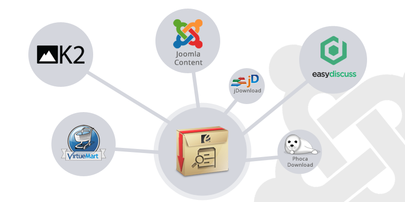

Egolt Archive provides the ability to present the Joomla! contents and any other sources in different intervals of time that you need to archive and search. This ability is not embedded in the Joomla! core ,however it is very practical and necessary.

The power of different sources(extensions) integration in Egolt Archive enables you to list and search everthing you want. Here are list of native extension's integration (besides you can extend your needed extension integration, if you a programmer):
In addition, this is not a simple search and the users can use different parameters in their search: selection date, ordeing, category, authors, included text and ...
Also, the results have various elements too: title, manipulated text & image, published date, category, author, hits and even comment count(Jcomments integration).
Here is the list of calendars which we natively support them (most used calendars in the world):
Also the "Calendar Module" with beautiful interface and ajax technology could help you to show the contents as event! (with number of articles per each day)
In addition, by "Search Module" you could put the search ability where ever you want and transfer the users to your listing easily.
One the other features in "Egolt Archive" listings is that you could set the date periodic! Some of the users just want to know how new the news or the content is. By this option for example, the users see the "2 weeks ago" instead of "10 July 2013".
In addition, by "Search Module" you could put the search ability where ever you want and transfer the users to your listing easily.
Also by "Date Module" you could list all the years and months with number of contents on them and consequently refering them to the proper listing.
All the elements you see in the components and modules are under your control. We made all the parameters and elements changable by website administrator.
You could display the listings in 4 different display type:
This extension fixed with your template width and apadpt with your device width! Displaying in phone is different from tablet and desktop. We determined all the conditions and made really flexible user interface.
On the other hand, Egolt Archive have 5 different color themes, so it could be adapt by your template color! These theme colors are:
You can use the "Authors Module" to show the authors list with date categorization. All the authors link to the component, so the visitors could see the authors list!
In addition, all listings have the option to be filtered by authors (by user clicks), it is not important what is the source(Joomla! content, K2 or other extensions!).
All the component and modules are fully supported Right To Left languages(RTL). This is because many of the users have the RTL languages(like persian, arabic, hebrew and ...).
Egolt Archive built by the power of Egolt Framework which is a pro library based on the Joomla! platform. It enables us to serve you better quality products and faster updates.
On the other hand, Egolt Update powers the easiest way for you to update the products, without any need to login the site to download the products.
Egolt Archive is an Open Source web-based product. It is in compliance
with the GNU/GPL license:
GNU General Public License, version 2
You can download the packages of Egolt Archive here.
^ Updated the "Egolt Update" engine [Important Update, read more here]
# Fixed issue with external image source in contents
+ Added "show unauthorized items" feature
# Fixed issue with "content status"
+ Added "EasyDiscuss" as a new compatible source
# Fixed issue with "calendar module" date selection when Apache rewrite module is active
# Fixed issue with displaying wrong product version (Administrator)
^ Updated the "Update Center" URL
+ Added more error handling on "Egolt Update"
+ Added new Authentication method for "Egolt Update"
# Fixed issue with uninstaller
^ Updated the brand name
New & Main Features :
+ Added "Islamic Calendar(Hijri)"
+ Added "Russian Calendar"
+ Added "Calendar Module" (with Ajax)
+ Added "Authors Module"
+ Added "Periodic" date display (example: 2 days ago)
+ Added "JComment" Integration
+ Added "Index Number"
+ Added "Light Green" theme color (thanks mussena)
Enhancements :
+ Added "Auto Selecting Categories List" (with Ajax)
+ Added "Link Target" option
+ Added "Read More" link
+ Added "Select Responsive" option
^ Updated the local calendars architecture
Bug Fixes :
# Fixed issue with IE browser in images
# Fixed issue with "Strict Standard Error" in categories
+ Added "Turkish Calendar"
+ Added "Content Status" including 'published', 'archived', 'unpublished' and 'trashed'
^ Updated the "Exact Phrase" functionality
^ Updated the architecture of local language strings (i.e. calendars)
+ Added "Phoca Download" source for Joomla! 2.5 architecture
+ Added Dutch language
+ Added Italian language
# Fixed issue with 3 Strict standards errors
^ Updated the product architecture to Joomla! 3.x compatible architecture
+ Added responsive layouts
+ Added "Egolt Update Plugin"
+ Added "Phoca Download" source
+ Added "Theme Color" feature with 4 colors (default, black, blue and red)
+ Added "including subcategories" feature (Joomla! content only)
+ Added individual session per each menu
+ Added additional options for paging
+ Added Joomla! image library to image engines
# Fixed some comparability issues about administrator and frontend template
# Fixed issue with reading today time based on database
^ Updated languages
^ Updated product title from "Egolt Archive Pro" to "Egolt Archive"
^ Updated the default image sizes in archive
# Fixed issue with pagination
# Fixed issue with "not included categories"
# Fixed issue with warning rising when the image of a item does not exist
# Fixed issue with "not include text"
^ Updated the Installer method
# Fixed issue with Persian language in Egolt Framework
+ Added Egolt framework
+ Added search module
+ Added K2 source
+ Added jDownloads source
+ Added VirtueMart source
+ Added Solar Hijri calendar
+ Added Photo Gallery view
+ Added Feed view
+ Added Title Only view
+ Added large number of parameters
+ Added thumbnail engine
^ Updated the component basics and architecture
^ Updated the component for Joomla! 2.5 platform
^ Updated the component parameters
^ Updated the languages
# Fixed issue with default thumbnails
+ Egolt Archive launched !